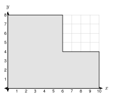
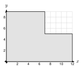

8.6 Density and Modeling
- Use density to find mass or weight, and decide if an object floats
- Find and compare population densities
- Explain how scale factor k changes length, area, and volume
- Plan a job with area, volume, density, and unit conversions
Warm-Up
1.
2.
3.
8.6.1Density and Weight
- Density = . Weight = density × .
- Water: lb per ft3, or g per cm3. Concrete: about lb per ft3.
- An object floats if its density is water. It sinks if its density is water.
4 in = ft
V = 12 · 20 · 13 =
Weight = 150 · 80 =
V =
Density =
0.7 < 1, so it .
8.6.2Population Density
A:
B:
More crowded:

Bottom: 10 · 4 = Top: 6 · 4 =
Area =
Density =
8.6.3Scaling Lengths, Areas, and Volumes
- Lengths: ×
- Areas: ×
- Volumes, and weights of the same material: ×

| Small cube | Large cube | Ratio | |
|---|---|---|---|
| edge | 2 | 6 | |
| surface area | |||
| volume |
Hull: 600 · (120)2 =
Capacity: 2400 · (120)3 =
Mass: 3000 · (120)3 =
8.6.4Modeling and Design
V = 12 · 10 · 13 =
40 ÷ 0.6 ≈ , so
Weight:
A: h = 500 ÷ 16π ≈ . SA = 2π(4)2 + 2π(4)(9.95) ≈
B: h = 500 ÷ 25π ≈ . SA = 2π(5)2 + 2π(5)(6.37) ≈
Less metal:
1. Weight = × volume. An object that floats has density less than water.
2. If lengths scale by k, areas scale by and volumes by .
3. For jobs that need whole items (bags, trips), round .
Practice
Density and Weight
1. Concrete weighs 150 lb per cubic foot. A slab is 15 ft by 10 ft and 6 in thick. Find its weight.
2. A pool is 20 ft by 10 ft and the water is 5 ft deep. Water weighs 62.4 lb per cubic foot. Find the weight of the water.
3. A steel bar is 2 in by 2 in by 36 in. Steel weighs 0.284 lb per cubic inch. Find the weight of the bar. Round to the nearest tenth.
4. An aquarium is 36 in by 15 in by 18 in and full of water. Find the volume in cubic feet, then the weight of the water. (1 ft3 = 1728 in3.)
5. An object has mass 540 g and volume 200 cm3. Find its density. Does it float in water?
6. A block of wood is 20 cm by 10 cm by 5 cm with mass 700 g. Find its density. Does it float?
7. A log is a cylinder with radius 0.5 ft and length 8 ft. Wood weighs 40 lb per cubic foot. Find the weight of the log, to the nearest tenth. Does it float?
Population Density
8. A city has 90,000 people in 36 square miles. Find its population density.
9. County A has 48,000 people in 80 square miles. County B has 63,000 people in 90 square miles. Which county is more crowded?

10. Each unit on the grid is 1 mile. The county has 26,400 people. Find the area and the population density.
11. A town has population density 480 people per square mile and an area of 25 square miles. How many people live there?
12. A village has 7200 people and a density of 90 people per square mile. Find its area.
Scaling
13. Box A is 2 by 3 by 4. Box B is 6 by 9 by 12. Find the surface area and volume of each. How many times larger is each for Box B?
14. A model ship is 1100 of the size of a real ship. The real ship has a hull surface of 25,000 m2 and a volume of 90,000 m3. Find the hull area and volume of the model.
15. A dollhouse is 112 of the size of a real house. A real room has a floor area of 120 square feet. Find the floor area of the model room in square inches. (1 ft2 = 144 in2.)
16. A cone-shaped candle 4 in tall holds 6 oz of wax. A similar candle 8 in tall is made of the same wax. How much wax does it hold?
17. A sphere has radius 3 and another has radius 9. Find the surface areas and volumes of both. Check that the ratios are 32 and 33.
Modeling and Design
18. A slab is 15 ft by 14 ft and 4 in thick. One 80 lb bag makes 0.6 cubic feet. How many bags are needed?
19. A road is 200 ft long and 12 ft wide. It is covered with gravel 6 in deep. A dump truck carries 10 cubic yards. How many truck loads are needed?
20. A pool is 25 ft by 12 ft and the water is 4.5 ft deep. Find the number of gallons (1 ft3 ≈ 7.48 gallons) and the weight of the water (62.4 lb per cubic foot). Round the gallons to the nearest gallon and the weight to the nearest ton (2000 lb).
21. Two cans each hold 350 cm3. Can A has radius 3 cm. Can B has radius 5 cm. Which uses less metal? Round to the nearest tenth.
22. A grain silo is a cylinder with radius 8 ft and height 30 ft, with a hemisphere on top. Grain weighs about 45 lb per cubic foot. How many pounds of grain fill the silo? Round to the nearest thousand pounds.
Test Practice
A. 24,000 lb
B. 36,000 lb
C. 288,000 lb
D. 1,440,000 lb
A. 150 cm3
B. 450 cm3
C. 1,350 cm3
D. 4,050 cm3